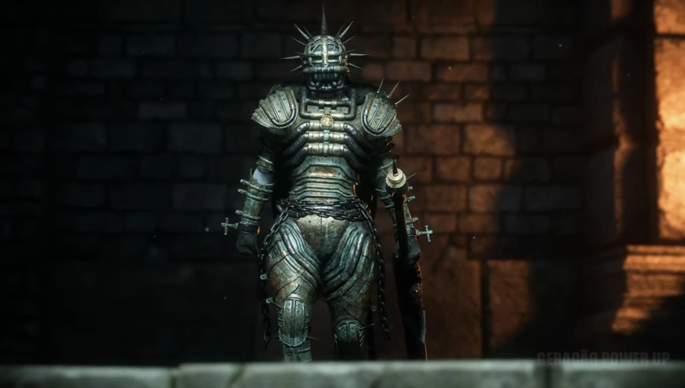
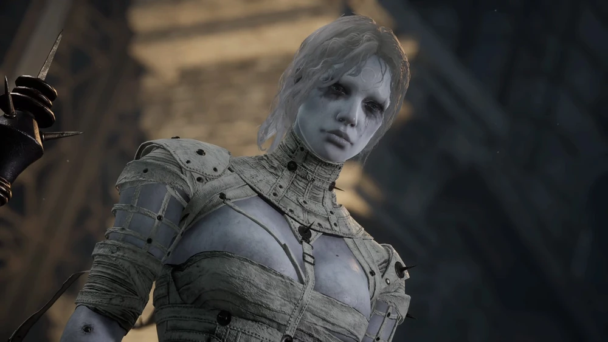

Laxasia the Complete
Laxasia is Simon Manus's most loyal and powerful warrior. Subjected to extreme Ergo experimentation, she has become a nearly perfect being. In her first phase, she is an armored juggernaut dragging a colossal greatsword. In her second phase, she sheds her heavy armor to unleash her true speed and devastating Electric Blitz capabilities, taking to the skies.
Combat Tips
In Phase 1, focus on breaking the shield on her back; if you can get behind her and attack it enough, it will shatter, severely limiting her defensive options. In Phase 2, the fight turns into a deadly game of ping-pong. When she flies into the air and shoots lightning bolts at you, Perfect Guarding the bolts will reflect them back at her, dealing massive damage and saving your life. Acid is her biggest weakness in both phases.
Combat Stats
- Type: Human (Enhanced)
- Weakness: Acid
- Resistance: Electric Blitz
- Location: Ascension Bridge (Arche Abbey)
- Summon: Specter highly recommended
- Drop: Sad Zealot's Ergo